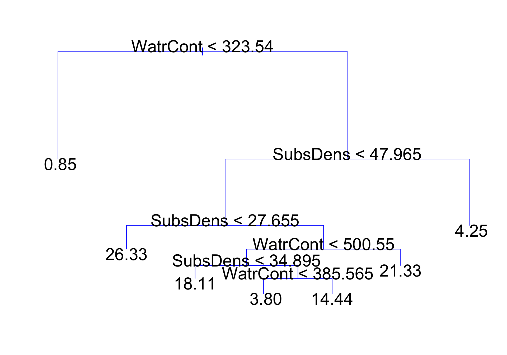

Part 1: Introduction
3/14/23
Lab 03 due Thursday 11:59pm to Canvas
No class this Friday!
These methods use a series of if-then rules to divide/segment the predictor space into a number of simple regions
The splitting rules can be summarized in a tree, so these approaches are known as decision-tree methods
Can be simple and useful for interpretation
Decision trees can be applied to both regression and classification problems
Typically not competitive with the best supervised learning approaches in terms of prediction accuracy

Top split: observations with WatrCont < 323.54 are assigned to left branch
Observations with WatrCont \(\geq\) 323.54 are assigned to right branch, and are further subdivided by SubsDens and finer values of WatrCont
For a new observation, the predicted abundance of a location with WatrCont < 323.54 is 0.85
Remarks:
Internal nodes: points along the tree where the predictor space is split
First node is often referred to as root node
Terminal nodes or leaves: regions where there is no further splitting
Seven terminal nodes on previous slide
The value in each terminal node is the value we predict for an observation that follows the path in predictor space to that terminal node
Decision trees are typically drawn upside down (leaves at bottom)
Any subnode of a given node is called a child node, and the given node, in turn, is the child’s parent node.
Extremely rough interpretation!!
WatrCont may be most important factor for determining the abundance of mites (among these two predictors)
Environments with low WatrCont tend to have very low abundances, as do environments with high SubsDens
Likely an oversimplification of the true relationships, but easy to display and interpret
Training/fitting model: Divide predictor space (the set of possible values for \(X_{1}, \ldots, X_{p}\)) into \(M\) distinct and non-overlapping regions, \(R_{1}, \ldots, R_{M}\)
Prediction/using model: For every observation that lands in \(R_{m}\), we output the same predicted \(\hat{y}\): the mean of the training responses in \(R_{m}\): \[\hat{y}_{R_{m}} = \frac{1}{n_{m}} \sum_{i \in R_{m}} y_{i}\]
In theory, regions \(R_{1},\ldots, R_{M}\) could have any shape. For simplicity, we divde predictor space into high-dimensional rectangles or boxes
Goal: to train the model, we want to find boxes \(R_{1},\ldots, R_{M}\) that minimize the residual sum of squares (RSS), given by \[\sum_{m=1}^{M} \sum_{i\in R_{m}} (y_{i} - \hat{y}_{R_{m}})^2,\]
where \(\hat{y}_{R_{m}}\) is the predicted/fitted value for \(y_{i} \in R_{m}\) in the training data
Unfortunately, it is computationally infeasible to consider every possible partition of the feature space into \(M\) boxes!
We take a top-down, greedy approach known as recursive binary splitting
“Top-down”: we begin at the top of tree where all observations belong to a single region, and then successively partition
“Greedy”: at each step, the best split is made at that current snap-shot in time, rather than looking ahead and picking a split that would be better in some future step
Note: at every stage of the tree, all predictors are candidates for the decision split (e.g. in mite data, WatrCont was first split, but showed up later down the tree)
Continue making splits on the data as we go
At very beginning of model fit, all observations belong in a single region. We must decide the first split/cut-point
We select the predictor \(X_{j}\) and the cutpoint value \(c\) such that splitting the predictor space into the regions \(\{X | X_{j} < c\}\) and \(\{X | X_{j} \geq c\}\) leads to lowest RSS
i.e., for any predictor \(j\) and cutpoint \(c\), we define the pair
\[S_l(j,c) = \{X | X_{j} < c\} \text{ and } S_{r}(j,c) = \{X | X_{j} \geq c\}\]
We seek the values of \((j, c)\) that minimize \[\sum_{i:x_{i}\in S_l(j,c)} (y_{i} - \hat{y}_{S_{l}})^2 + \sum_{i:x_{i}\in S_r(j,c)} (y_{i} - \hat{y}_{S_{r}})^2,\]
where \(\hat{y}_{S_{l}}\) is the average of the training responses in \(S_l(j,s)\)
Consider some hypothetical data, where I have a single predictor x and a response variable y:
x y
1 0 1
2 3 2
3 4 3
4 10 4Only makes sense to split the data based on the observed values of x
x < 15 is sillyNotice that choosing a cut-point of \(c = 1\) or \(c= 2\) leads to same partition of the data, and therefore same RSS
So we consider cutpoints as the mean between consecutive values of observed x:
At step one of the tree, all 70 observations are together. Deciding first split means considering all of the following:
Splitting on SubsDens (\(j = 1\)):
Splitting on WatrCont (\(j = 2\)):
Let’s compute the RSS for a few of these candidate splits. Live code!
When splitting on SubsDens < 22.63, we get the following RSS:
[1] 11058.76WatrCont < 145.48, we get an RSS of:[1] 10876.12Doing this for all possible splits, we get the following SSRs:
WatrCont < 323.54, which is what we saw in the tree!Then, repeat the process of looking for the best predictor and best cut-point in order to split the data further so as to minimize RSS within each of the resulting regions
Instead of splitting entire predictor space, we split one of the two previously identified regions
Now we have three regions
Again, split one of these further so as to minimize RSS. We continue this process until a stopping criterion is reached
We can also split on qualitative predictors!
If \(X_{j}\) is categorical variable with categories “1”, “2”, “3”, …, then candidate split regions would be:
\(S_{l}(j, ``1") = \{X | X_{j} = ``1"\} \qquad \text{ and } \qquad S_{r}(j, ``1") = \{X | X_{j} \neq ``1"\}\)
\(S_{l}(j, ``2") = \{X | X_{j} = ``2"\} \qquad \text{ and } \qquad S_{r}(j, ``2") = \{X | X_{j} \neq ``2"\}\)
…
Notice that if \(X_{j}\) has more than two levels, we would need to choose the level that yields the best split